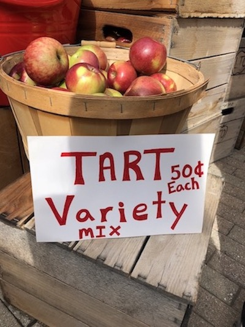
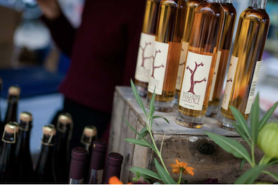
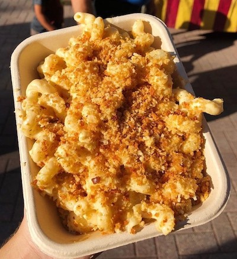
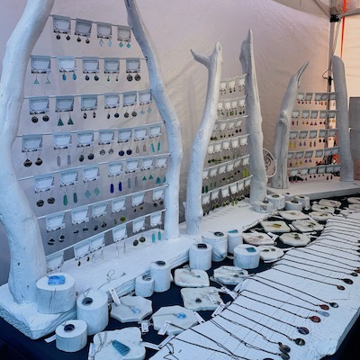

X
With over 100 vendors present at the festival, there are many opportunities to be introduced to the rich artisan and culinary community in Ithaca. Our food vendors feature apple-centric and other fall classics for you to taste, and the craft vendors offer homemade goods like soaps, jewelry, sculptures, clothing, and more! This is the perfect place to learn about and support Ithaca's small businesses that encompass the heart of the town.
Farm Fresh Apples and Produce

Schweigarts Sugar Shack
Schoolyard Sugarbush
A J Teeterfarm
Littletree Orchards
Creamcycle
Maple River Syrup Company
MacDonald Farms
Cornell Society of Horticulture
Laughing Goat Fiber Farm
Robbie’s Produce
Picaflor Farm
Little Farm Bakery
Little Grey Bakery
Mojo Hot Sauce
and more!!!
Cider Houses & Wineries

Blackduck Cidery
Redbyrd Orchard
South Hill Cider
New Leaf Cider Co.
Thousand Islands Winery
Finger Lakes Cider House
New York Cider Company
Eve's Cidery
Ashley Lynn Winery
and more!!!
Food Vendors

Macarollin
Mr. Squeeze Lemonade
Kettle Corn Shoppe
SPM Empanadas
Fittnell Barbeque
Tibetan Momo Bar
Travelers Kitchen
Asempe Kitchen
Vail Bros inc
On The Street Pitas
Silo Food Truck
B&B Kettle Korn
Robbie’s Produce
PDRS Catering
Trini Style
Coltivare
She Messy Tacos
Adam Grill
Thai Basil
Zocalo
Yxi's Arepas & Gordito
Solaz
The Yellow Deli
Lou's Covert Kitchen
Playland Amusements Concessions
and more!!!
Crafters

A&K Creations
Alchemist's Whim
All Forked Up Art
Anna Pausch Studios
Art Of Yen Ospina
Black Rabbit Studio
Blue Toucan Studios - Fairy Doors
CHOP SHOP STORE
Crescent Moon studio
Daisy Hollow Farm
Dale Bowers Art
Elizabeth Lassing Jewelry
For Claudia’s sayke
Hooked Productions
Interstellar Love Craft
Jake’s Jammin Bow Ties
Kom Life
Sunny Days of Ithaca
Sunshine's Creative Designs
Via's Cookies
Water of Whimsy
Youth Entrepreneurship Market
Your CBD Store
Saratoga Peanut Butter Company
Spirited servers
and more!!!